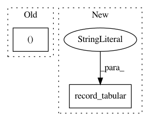

817ebfc8f001bb9a04920e84ab937897eafb1c99,a2c/a2c.py,,learn,#Any#Any#Any#Any#Any#Any#Any#Any#Any#Any#Any#Any#Any#Any#Any#Any#Any#Any#,833
Before Change
//enqueue_threads = model.q_runner.create_threads(model.sess, coord=tf.train.Coordinator(), start=True)
for update in range(1, total_timesteps//nbatch+1):
obs, states, rewards, masks, actions, sub3, sub4, sub5, sub6, sub7, sub8, sub9, sub10, sub11, sub12, x0, y0, x1, y1, x2, y2, values = runner.run()
policy_loss, value_loss, policy_entropy, \
policy_loss_sub3, policy_entropy_sub3, \
policy_loss_sub4, policy_entropy_sub4, \
policy_loss_sub5, policy_entropy_sub5, \
After Change
logger.record_tabular("policy_loss_sub6", float(policy_loss_sub6))
logger.record_tabular("policy_entropy_sub6", float(policy_entropy_sub6))
logger.record_tabular("policy_loss_x0", float(policy_loss_x0))
logger.record_tabular("policy_entropy_x0", float(policy_entropy_x0))
logger.record_tabular("policy_loss_y0", float(policy_loss_y0))
logger.record_tabular("policy_entropy_y0", float(policy_entropy_y0))
In pattern: SUPERPATTERN
Frequency: 3
Non-data size: 2
Instances
Project Name: chris-chris/pysc2-examples
Commit Name: 817ebfc8f001bb9a04920e84ab937897eafb1c99
Time: 2017-10-30
Author: sjhshy@gmail.com
File Name: a2c/a2c.py
Class Name:
Method Name: learn
Project Name: rail-berkeley/softlearning
Commit Name: 36eb9f8e99fd5e87b4969fc027467cc5c3f6d55e
Time: 2018-06-18
Author: azhou42@berkeley.edu
File Name: softlearning/algorithms/sac.py
Class Name: SAC
Method Name: log_diagnostics
Project Name: chris-chris/pysc2-examples
Commit Name: 9780b255cd66f45ecb0c58872ef4594e52280e76
Time: 2017-08-21
Author: sjhshy@gmail.com
File Name: sc2_deepq.py
Class Name:
Method Name: learn